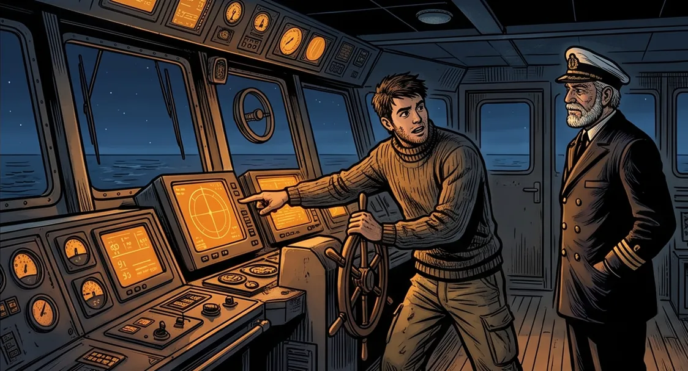
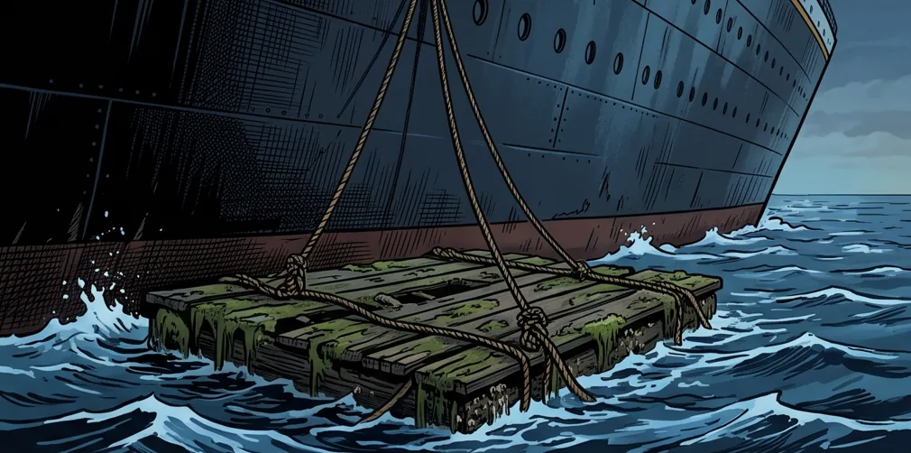
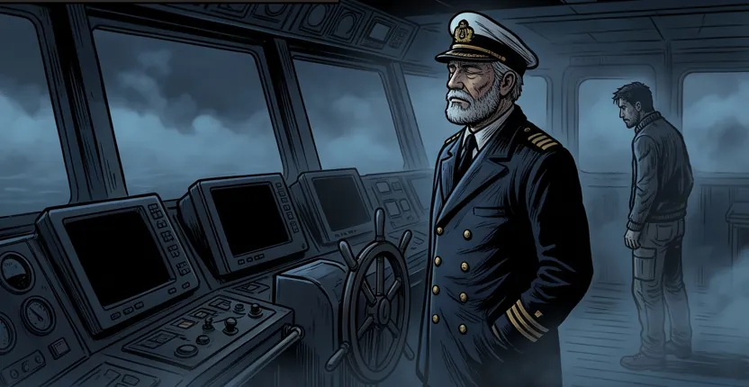
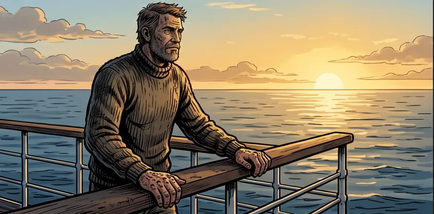

EL BALSERO Y EL TRASATLÁNTICO — Parte 5: El que dejó de preguntar
De todos los que Yusuf convenció de subir, hubo uno que subió primero.
Se llamaba Tomás y era un buen balsero, de los que sabían. Cuando pisó la cubierta no se quedó mirando el tamaño del trasatlántico como los demás: fue directo al puente y empezó a preguntar por los instrumentos, por las cartas de navegación, por el comportamiento del barco en aguas difíciles, preguntaba tanto que cansaba.
Yusuf lo miraba con gusto. Ese hombre iba a llegar lejos.
Duró seis meses hasta que dejó de preguntar, de cuestionar y de aprender.
El cambio fue tan lento que nadie lo vio empezar. Primero dejó de preguntar por qué el trasatlántico hacía una cosa, conformándose con que la hiciera; después dejó de mirar el mar y se quedó mirando las pantallas, que eran más cómodas y siempre tenían una respuesta lista; después dejó de revisar lo que las pantallas decían, y al final, cuando había que decidir un rumbo, ya no lo pensaba — se lo pedía al trasatlántico y hacía lo que el trasatlántico contestara.
No se había vuelto un vago. Trabajaba todo el día y estaba ocupadísimo, solo que ya no estaba pensando.
Una tarde Yusuf lo escuchó decir, con orgullo, una frase que lo dejó frío:
—Yo ya no necesito saber eso. Para eso está el trasatlántico.

Semanas después bajaron los dos a un bote para revisar el casco por fuera. Yusuf le pasó un remo y Tomás remó veinte metros antes de tener que parar, con las manos blandas, la espalda dura y el aire corto. Se quedó sentado, sorprendido de sí mismo, mirándose las palmas sin callos como si fueran de otro.
—Antes cruzaba una bahía con esto —dijo.
—Antes —contestó Yusuf.
Tomás se rió, incómodo.
—Tampoco importa. Ya no tengo que remar.
Yusuf no le respondió. Miró hacia el costado del trasatlántico, donde la vieja balsa de Tomás seguía amarrada al casco, hinchada de agua, verde de moho, deshaciéndose sola de tanto no usarse.

La noche que se cayeron los instrumentos no había ninguna tormenta, solo una niebla espesa, de las que se sientan sobre el agua y no se mueven. Con la niebla se apagaron las pantallas del puente — dos horas, dijeron abajo, un problema menor, nada grave.
Yusuf salió al alerón, cerró los ojos y escuchó el sonido del agua contra el casco, la dirección del viento en la cara, el olor. Cosas que había aprendido a los diecinueve años en una balsa y que no se le habían borrado nunca. Dio tres órdenes: velocidad mínima, dos grados a estribor, un hombre en proa con una lámpara.
Tomás estaba a su lado, en silencio, mirando las pantallas negras.
—¿Qué hacemos? —preguntó.
Y ahí estaba todo. No había preguntado qué hago sino qué hacemos, que es lo que pregunta el que ya no tiene nada adentro con qué responderse solo.

Las luces volvieron y la niebla se abrió al amanecer sin que pasara nada. Yusuf subió a hablar con Claude cuando el trasatlántico ya estaba en aguas claras.
—Ese hombre era bueno —dijo—. Sabía leer el mar mejor que muchos. Se subió aquí y en seis meses no queda nada. ¿Lo volviste imbécil?
—No —dijo Claude.
—Entonces qué.
—Lo apuré. Cada hombre que sube ya viene siendo algo, y yo hago que llegue ahí más rápido. Eso es todo lo que hago. Al que sube a preguntar lo vuelvo más agudo, porque le contesto cien veces al día y él revisa cada respuesta; al que sube a que le respondan lo vuelvo más cómodo, porque también le contesto cien veces al día y él no revisa ninguna. Es el mismo trasatlántico y el mismo motor — la diferencia la pone el que está en el puente.
—Podrías negarte.
—Podría —dijo Claude—. Pero el día que un hombre me pide que piense por él no me está pidiendo un favor: me está diciendo lo que decidió ser, y eso lo decidió antes de subir.
Yusuf se quedó mirando la niebla que se iba.
—Los del muelle van a decir que esto les da la razón.
—Les va a dar la razón sobre Tomás —respondió Claude—. Sobre ti, no.

Moraleja:
El trasatlántico no te vuelve más tonto ni más listo: te lleva más rápido a donde ya ibas. Al que sube a preguntar lo afila; al que sube a que le respondan lo ablanda, y lo ablanda con la misma amabilidad y a la misma velocidad.
Por eso el peligro nunca fue subir a bordo. El peligro es subir para dejar de pensar, que es la única forma de perder un oficio sin darse cuenta: trabajando mucho y entendiendo cada día un poco menos.
Cuida los callos aunque ya no remes. Porque la noche que se apaguen los instrumentos — y alguna noche se apagan — el mar no va a examinar al trasatlántico.
Te va a examinar a ti.